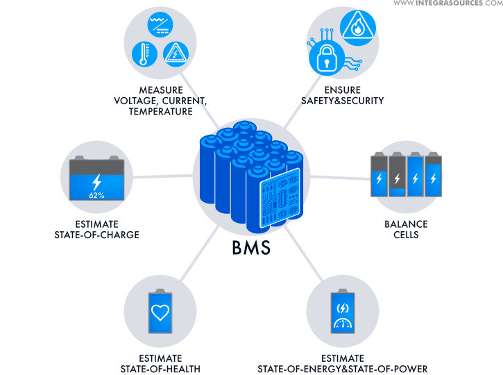
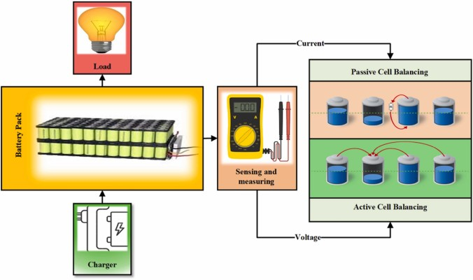
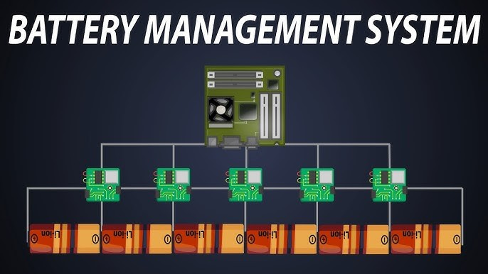

In the rapidly evolving landscape of electric vehicles and renewable energy storage, battery technology plays a pivotal role. However, the performance and longevity of these batteries heavily rely on a delicate balance maintained within their cells. This is where Battery Management Systems (BMS) step in, acting as the vigilant guardians of battery health.
The Challenge of Imbalance
Imagine a battery pack as a team of runners. For optimal performance, each runner must maintain a similar pace and energy level. If one runner falls behind or overexerts, the team's overall performance suffers. Similarly, within a battery pack, if individual cells become imbalanced, the entire pack's performance and lifespan can be compromised.
The Role of BMS: A Balancing Act
The BMS is a sophisticated electronic system designed to monitor and manage the health of each cell within the battery pack. Its primary function is to ensure that all cells remain in a state of balance, preventing any one cell from becoming overcharged or undercharged.

Key Balancing Techniques
The BMS employs two primary strategies to maintain balance:
Active Balancing:
- Energy Transfer: This method involves transferring excess energy from overcharged cells to cells that require more charge.
- Efficiency: Active balancing is highly efficient as it minimizes energy loss.
- Precision: The BMS carefully controls the transfer process to ensure optimal balance.

Passive Balancing:
- Energy Dissipation: In this method, excess energy from overcharged cells is dissipated through resistors, converting it into heat.
- Simplicity: Passive balancing is relatively simple to implement.
- Less Efficient: However, it is less efficient as energy is lost in the form of heat.
The Benefits of Balanced Battery Packs
- Enhanced Safety: Balanced cells reduce the risk of overheating, fire, and other safety hazards.
- Extended Lifespan: A balanced battery pack can last longer, minimizing the need for frequent replacements.
- Improved Performance: Balanced cells contribute to higher energy density, faster charging times, and better overall performance.
- Optimized Energy Efficiency: Balanced cells maximize the utilization of energy, reducing energy waste.

The Future of Battery Management
As battery technology continues to advance, so too will BMS systems. Researchers and engineers are exploring innovative techniques to further improve the efficiency and lifespan of battery packs. Some potential advancements include:
- Advanced Algorithms: More sophisticated algorithms can optimize balancing strategies, leading to improved performance and energy efficiency.
- Real-time Monitoring: Real-time monitoring of cell health can enable proactive maintenance and early detection of potential issues.
- AI-Powered BMS: Artificial intelligence can enhance the decision-making capabilities of BMS, leading to more intelligent and adaptive balancing strategies.
By understanding the critical role of BMS in maintaining battery health, we can unlock the full potential of electric vehicles and renewable energy storage systems, driving a sustainable future.